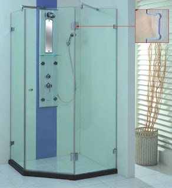
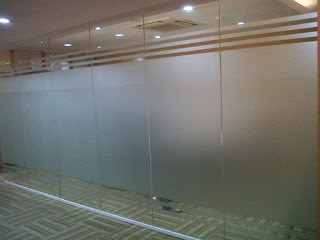

Kaca yaitu salah satu unsur yang cukup penting pada sebuah bangunan bagus untuk rumah tinggal, pertokoan, gedung bertingkat maupun multi use building. Kita sering menemui material-material hal yang demikian pada gedung, kantor, industry pun rumah hunian. Kaca juga berfungsi sebagai daerah keluar masuknya sinar matahari pada sebuah bangunan. Karenanya dari itu, benda ini cukup penting diterapkan pada sebuah bangunana.
Jenis-ragam kaca diantara lain kaca tempered, kaca shower, railing kaca, kanopi kaca dan masih banyak lagi. Berikut ini sedikit penjelasan mengenai beraneka macam kaca dan fungsi kaca dan juga parket lantai kayu jati yang bisa anda peroleh.
Jasa Pemasangan Railing Kaca
railing kaca Langsa adalah opsi yang tepat saat Anda menghendakin desain interior rumah yang minimalis. Pemilik rumah berharap sekali mempunyai interior yang seperti itu minimalis. Mereka tak lagi membuat pagar tangga atau balkon dari kayu. Maka dari itu, para produsen berusaha untuk menghasilkan railing yang terbuat dari kaca dengan contoh yang berbeda-beda. Kalau itu, dari segi keamanan, kaca tempered ini juga ideal kalau menjadi opsi Anda. Tapi kaca pecah, kaca tempered tidak akan melukai orang yang terkena kaca tempered tersebut lantaran pecahan seperti itu kecil dan lembut, tak berupa kepingan yang runcing.
Ada banyak opsi variasi kaca yang bisa dipakai. Tentukan juga desain railing kaca Langsa. Railing ini dapat diciptakan sebagai pembatas pada tangga dan juga sebagai pembatas pada balkon. Jika itu, seandainya terjadi bencana gempa bumi dan terbukti kaca pecah, kaca tempered ini akan pecah dan membentuk pecahan yang benar-benar kecil dan lembut. Dikatakan benar-benar aman lantaran kaca tempered tak menimbulkan pecahan yang runcing saat tiba-tiba kaca pecah entah itu pengaruh kecelakaan atau petaka seperti gempa. Jika kaca, perhatikan juga aluminum yang menjadi piguranya. Sekarang pasti, dengan railing ini, Anda tak cuma membuat tangga dan balkon lebih aman, tapi juga untuk memperindah tampilan interior rumah Anda.
Bagi anda yang sedang mencari railing kaca Langsa dengan mutu terbaik, anda dapat seketika kunjungi dis.or.id. Harga yang sangat ekonomis serta mutu terbaik yang sudah terjamin membikin anda tak akan menyesal membeli railing kaca Langsa di dis.or.id.
Info Pemesanan Selengkapnya
Google Maps: https://www.google.com/maps/d/viewer?mid=1W14inZYnfBEjAU3RL6mMdLOdyHyt3uKR&ll=-7.27380280025364%2C112.65243155000007&z=18
Note: https://www.facebook.com/notes/distributor-of-industrial-supply/kontraktor-jasa-pemasangan-railing-tangga-kaca/1785722898394256/
Event: https://www.facebook.com/events/1865522363760219/
Distributor, Supplier & Jasa Pasang Kanopi Kaca

Seiring dengan perkembangan zaman di dunia properti, sekarang kanopi kaca telah berkembang pesat meniru arsitektur modern. Atap kaca skylight banyak dipakai pada rumah, gedung, kantor, café yang mengusung gaya modern untuk membikin efek cahaya yang dramatis pada ruangan komponen bawahnya serta memberi kesan modern pada bangunan. Sifat utama material bahan atap akrilik juga dapat disebut atap acrylic, ini yaitu warnanya yang bening tembus pandang. Jadi telah tidak heran lagi semua orang berharap mencari harga yang betul-betul kompetitif untuk menyesuaikan budget atau anggaran mereka masing – masing untuk membikin produk canopy kaca. Bila tembus pandang, kaca menyerap sinar yang masuk sehingga semakin tebal kaca maka kian sedikit sinar yang bisa melaluinya, maka sifat transparannya makin berkurang.|Di samping pintu kaca shower akan membuat kamar mandi kecil tampak lebih besar.
Tak anda berminat untuk memasang kaca kanopi pada rumah, gedung maupun kantor, anda dapat lantas mengunjungi dis.or.id. Dis.or.id juga menyediakan jasa pemasangan kanopi kaca yang tentunya dengan bantuan tenaga professional yang sudah berpengalaman. Setelah kaca untuk atap kanopi cukup digemari. Tak anda sedang mencari kanopi kaca, anda dapat langsung mengunjungi dis.or.id.
Distributor & Supplier Kaca Shower

Seluruh orang pasti berharap punya kamar mandi yang kondisinya selalu bersih sehingga dapat terasa lebih nyaman ketika digunakan. Dengan memakai kaca shower pastinya kamar mandi yang dimiliki akan lebih tampak mewah dan menjadi sekat antara area berair dan area kering. Kaca shower ini dapat menjadi dan memiliki poin estetika tersendiri sebab dengan memasangnya tentu kamar mandi anda akan kelihatan lebih cantik dan mewah layknya kamar mani hotel. Jadi sistemnya jauh lebih praktis karena tak perlu menyiapkan bahan sendiri untuk membuat sekat ruang. Penyekat ini akan memisahkan antara daerah basah yang diterapkan untuk mandi atau meletakan shower dan tempat lain yang yakni zona kering. Kecuali ini akan berakibat terhadap tarif yang akan dikeluarkan untuk membayar tukang. Kita tak perlu repot lagi mencari tukang sendiri karena pemasangan alat sekat ini memang memerlukan teknik tersendiri.
Tidak anda sedang memerlukan kaca shower untuk kamar mandi anda, anda bisa segera mengunjungi dis.or.id. Disana anda bisa menerima kac shower yang pantas dengan harapan anda. Tak terbaik dan harga terjangkau.
Distributor, Supplier & Jasa Pasang Kanopi Kaca
Pintu Kaca Shower pada kamar mandi merupakan salah satu opsi yang baik untuk desain interior kamar mandi modern. Atap kaca skylight banyak diaplikasikan pada rumah, gedung, kantor, café yang mengusung gaya modern untuk membuat efek cahaya yang dramatis pada ruangan bagian bawahnya serta memberi kesan modern pada bangunan. Canopy kaca dengan atap kaca memang sebuah bangunan yang asangat elgan untuk jaman modern seperti sekarang ini dengan harga yang betul-betul lumayan apabila di bandingkan kanopi atap umum. Jadi telah tidak heran lagi semua orang berharap mencari harga yang amat kompetitif untuk menyesuaikan budget atau anggaran mereka masing – masing untuk membuat produk canopy kaca. Disinilah letak perbedaan optis yang utama antara akrilik (acrylic) dengan kaca. Bila tembus pandang, kaca meresap sinar yang masuk sehingga semakin tebal kaca maka kian sedikit sinar yang dapat melewatinya, maka sifat transparannya makin berkurang.|Di samping pintu kaca shower akan membikin kamar mandi kecil nampak lebih besar.
Kini anda bisa menerima kanopi kaca dengan mutu terbaik dan juga berkualitas di dis.or.id. Harga untuk setiap pemasangan pun beraneka layak dengan keperluan anda. Anda juga dapat memenfaatkan jasa pemasangan atap kanopi kaca dengan segala macam kaca yang anda butuhkan yang layak dengan kriteria atap kanopi. Banyak bangunan seperti gedung perkantoran, perumahan, ruko dan apartement yang memakai kanopi kaca tempered. Setelah kaca untuk atap kanopi cukup digemari. Tidak anda sedang mencari kanopi kaca, anda bisa seketika mengunjungi dis.or.id.
Jasa Maintenance Kaca

Jasa maintenance kaca menjadi solusi bagi Anda yang mempunyai gedung yang terbuat dari kaca. Kaca sangat membutuhkan perawatan sebab tiap hari terkena cahaya sang surya atau juga hujan. Selain cuma membersihkan kaca, jasa maintenance kaca juga dapat menjalankan perbaikan. Daya yang di gunakan untuk jasa maintenance kaca diantaranya godole, rope access, crane, dan scaffolding.
Dengan memakai bahan pembersih yang akan membuat kaca tampak bersih seperti pertama kali dipasang. Bila juga dengan warna dan format kaca.
Dengan telah memberikan training kepada kekuatan ahli sehingga mereka telah bisa menjalankan pekerjaan mereka dengan sungguh-sungguh baik. Selain hanya dalam hal membersihkan kaca, mereka juga cakap mengerjakan perbaikan serta penggantian kaca yang mengalami kerusakan.
Jasa Pemasangan Kaca Tempered
Jasa pemasangan kaca tempered menawarkan solusi bagi Anda mempunyai budget yang terbatas tapi berharap mempunyai properti, entah itu gedung perkantoran, warung, atau rumah hunian yang menggunakan kaca tempered. Semakin banyak orang yang berharap memakai kaca ini. Untuk komponen perkantoran, pintu, partisi, serta balkon biasanya terbuat dari kaca tempered. Kaca jenis Tempered memiliki kekuatan 4-5 kali lebih bagus dibandingkan kaca awam dengan ketebalan yang sama. Untuk gedung perkantoran, bagian yang paling tak jarang dibuat dengan bahan yang satu ini yakni jendela dan pintu. Melainkan dahulu cuma gedung perkantoran atau pusat perbelanjaan modern saja yang memakai tipe kaca ini, kini rumah hunian juga telah dibangun dengan kaca tempered. Kecuali ini tidak lain karena semakin banyak orang yang memahami kualitas serta keunggulan dari kaca tempered ini.
Jika itu, berjenis-jenis bagian properti akan semakin menarik jikalau diwujudkan dari kaca tempered seperti kanopi, pintu, kamar mandi, dan balkon.
Harga untuk tiap-tiap pemasangan dijamin termurah dan hasil pengerjaan yang cocok dengan kemauan anda. Lebih dari itu, dis.or.id telah menyiapkan energi spesialis yang siap untuk menjalankan pemasangan, entah itu kaca tempered untuk kanopi, pintu, partisi, balkon, dan lain sebagainya. Harga yang ditawarkan untuk pemasangan kaca tempered benar-benar murah.
Distributor & Supplier Pintu Kaca
Pintu kaca sungguh-sungguh berkhasiat bagi anda yang berkeinginan menabah kesan gedung lebih menawan dan mewah. Ada banyak desain pintu kaca yang dapat kita temui seperti pintu kaca berbentuk sliding (geser) atau folding (lipat). Tidak Anda menyukai dengan pintu kaca dengan bingkai, Anda dapat pilih apakah frame tersebut terbuat dari bahan kayu atau aluminium. Anda bisa menentukan apakah model pintu kaca lipat satu, lipat dua, atau sliding (geser). Tersedia sebagian tipe kaca dengan kwalitas yang terbaik, mulai dari kaca tempered hingga yang non-tempered. sebagian jenis kaca yang paling acap kali diaplikasikan untuk membikin pintu kaca, mulai dari jenis kaca tempered hingga kaca non-tempered. Dalam hal ini, terdapat beberapa ragam kaca dengan kualitas yang terbaik. Sekarang paling banyak diminati ketika ini yakni kaca tempered karena jauh lebih kuat dan tahan lama.
Dis.or id siap membantu anda untuk membuatkan pintu kaca idaman anda. Dengan daya spesialis yang telah amat handal dalam membuat pelbagai model pintu kaca.
Dis.or.id juga menyiapkan beberapa jenis kaca dengan ketebalan yang berbeda.
Jual Kaca Cermin
Kaca cermin ataupun kaca reflektif adalah ragam kaca yang bisa memantulkan cahaya dan mereduksi sifat tembus pandang dari sisi luar, sehingga sering kali pula disebut dengan kaca one way. Kaca cermin juga diciptakan untuk yang lain seperti pintu. kaca cermin lazim diaplikasikan pada bukaan pintu atau jendela dinding luar, yang nantinya diinginkan berpenampilan mewah pada bangunan. Untuk bangunan bertingakat, khususnya diaplikasikan pada tipe dinding kaca. Jadi, Anda memiliki banyak pilihan untuk menentukan cermin yang Anda pilih benar-benar dapat mempercantik interior rumah Anda. Bahkan juga komponen tepi. Sekarang perlu diamati juga ialah apakah Anda berkeinginan mempunyai kaca cermin desain minimalis atau yang elegan. Cermin minimalis memiliki siku.
Anda juga bisa tentukan apakah ingin mempunyai cermin yang memiliki bingkai atau tak. Anda bisa menambahkan pigura atau tanpa pigura layak dengan kesukaan Anda. Atau kaca cermin ini juga bisa dihasilkan sebagai bahan pintu lemari. Tetapi, Anda bisa melihat orang lain dari dalam rumah. Dis.or.id menyediakan kaca cermin yang dapat anda beli dengan harga yang benar-benar murah dan dengan kwalitas terbaik. Melainkan kunjungi dis.or.id untuk mendapatkan penawaran menarik.
Distributor & Supplier Pintu Lipat Kaca
Kaca tempered juga dapat dipakai untuk pintu lipat kaca. Jadi, bahan ini tidak hanya untuk pintu saja. Secara awam, kaca dibagi menjadi 6 macam, adalah kaca jernih, kacang berwarna atau tinted glass, kaca es, kaca cermin atau one way glass, kaca laminasi, dan yang terakhir kaca tempered. Apalagi apabila taman Anda terbuka sehingga pencahayaan natural masuk. Maka, cahaya itupun akan masuk ke dalam ruang makan sebab penyekatnya terbuat dari pintu kaca transparan.
Tak cuma itu, pintu lipat kaca dapat Anda pasang di kamar lantai atas yang ada balkon. Akan tapi, ada juga penentu harga lainnya seperti aksesoris. Dan yang pasti, ruangan menjadi lebih modern, minimalis, dan nyaman untuk ditempati.
Jasa Pemasangan Kubikel Toilet

Kubikel kaca banyak ditemui di bermacam-macam daerah besar seperti perkantoran, gedung, bahnkan sekarang juga dapat di gunakan untuk hunian rumah. Banyak keuntungan yang dapat di daptkan dengan memakai kubikel toilet diantaranya yakni tampilan yang lebih elegan dan lebih bersih.
Kaca kini banyak diterapkan sebagai penyekat ruang. Salah satunya di kamar mandi. Sekiranya anda sedang memerlukan kubikel kamar mandi, anda bisa segera mengunjungi situs dis.or.id. Karena disana terdapat kubikel WC dengan bermacam-macam ukuran serta ketebalan kaca.
Profit dari sekat kaca memberikan ialah dapat memberikan efek luas karena ruangan tersekat tapi secara visual tidak.
Justru embun dapat menempel di kaca dan lambat laun bisa membikin kaca tidak sejernih semula.
Distributor & Supplier Partisi Kaca

Partisi kaca tidak hanya di perkantoran modern atau perbelanjaan. Banyak rumah hunian yang sekatnya kini terbuat dari kaca. Banyak ruangan yang disekat dengan menerapkan partisi kaca. Anda bisa menghitung sendiri berapa uang yang Anda siapkan untuk membeli bahan untuk partisi tembok. Biaya pemasangan lebih murah sebab waktu yang tak lama untuk memasang partisi yang terbuat dari kaca hal yang demikian. Alasan yang ketiga, partisi kaca ini tak menghabiskan space. Jadi, Anda akan berhemat kalau memilih untuk memasang partisi kaca ini. Akan tetapi, Anda selektif dalam hal memilih kaca untuk partisi. Dis.or.id menjual pelbagai variasi kaca penyekat yang kualitasnya terbaik. Sekiranya anda kesulitan untuk memasang dinding kaca penyekat, dis.or.id menyediakan jasa pemasangan dinding kaca penyekat untuk kamar mandi rumah anda. Disana anda akan mendapatkan partisi kaca yang dengan kemauan anda.